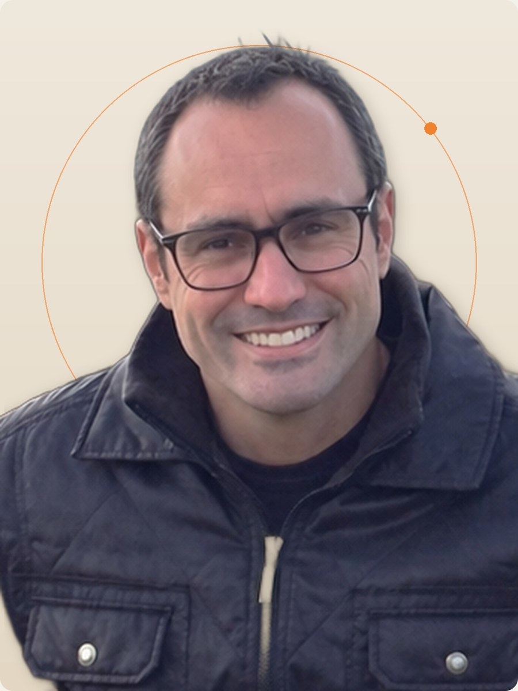
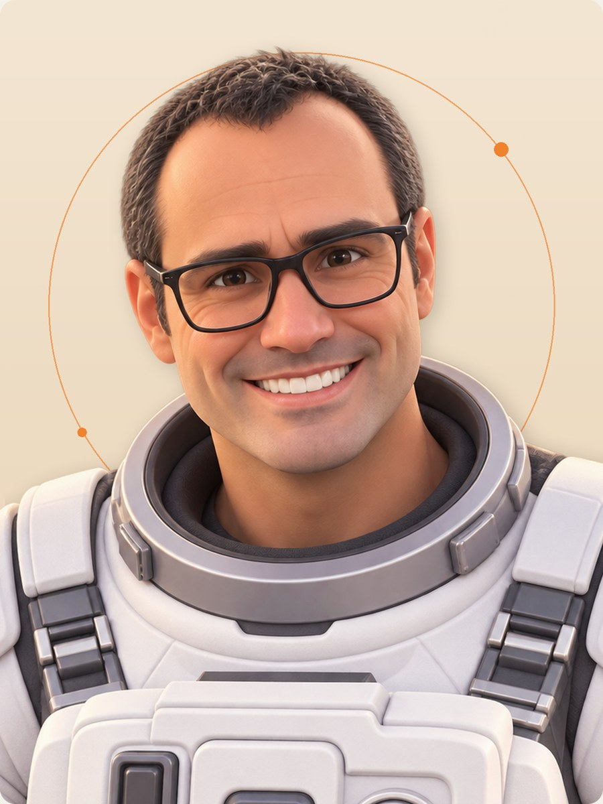

Eduardo Lion
Fundador e Direção Criativa
Empreendedor e curioso por natureza, atua há mais de 20 anos explorando as possibilidades do universo digital. Com uma trajetória que transita entre diferentes áreas do conhecimento, gosta de questionar o óbvio, entender como as coisas funcionam e encontrar caminhos pouco convencionais. Na Imagenou, está à frente da visão criativa e dos projetos especiais.